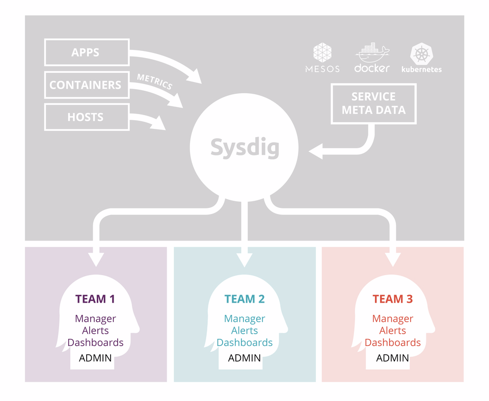

User and Team Administration
This page describes the concepts behind Sysdig's users, teams, and role permissions.
Understanding Sysdig Users
Users in Sysdig are identified by user name, email address, and password or third-party authentication option.
Users are either:
Invited manually by an Administrator via the Sysdig UI, or
Authenticatedthrough a third-party system, or
Entered directly in the Sysdig database through the Admin API, which can bypass the invitation process if needed.
When invited, the new user is created in the Sysdig database upon the user's first successful login to the Sysdig UI. Before the user accepts the invitation, enters a password, and logs in, they have a "pending" status.
System-Based Privileges
From the outset, users in the Sysdig environment have one of three types of system privileges
(Super) Admin:This is the administrator whose email address is associated with the Sysdig billing account. This user has administrator access to everything. Most relevant in on-prem installations.
Administrator: Any administrator can grant Admin system privileges to any user. Administrators are automatically members of all teams.
Administrators can create/delete users; create/configure/delete teams; create/delete notification channels; manage licenses; and configure Agents from links in the Settings menu that are hidden from non-admins.
User (non-admin): By default, new users have read/write privileges to create, delete, and edit content in the Sysdig interface. They do not see options in the Settings menu that are restricted to Administrators.
User rights are further refined based on team and team role assignments, described below.
When a user is created, it is automatically assigned to a default team (described below).
Warning
Notice that this default workflow grants all new users Edit access.
Understanding Sysdig Teams
Teams can be thought of as service-based access control.
Purpose of Teams
Organizing users into teams enables enforcing data-access security policies while improving users' workflows. There are different team roles, each of which has read/write access to different aspects of the app.
This limits the exposure of data to those who actually need it, and also makes users more productive by focusing them on data that is relevant to them.
|  |
The following are some potential use cases for Teams:
"Dev" vs "Prod": Many organizations prefer to limit access to production data. Permits isolating physical infrastructure and the applications on top.
Microservices: Scoping data for individual dev teams to see their own dashboards and field their own alerts. Permits team creation based on logical isolation using orchestration or config management metadata.
Platform as a Service: Where Ops teams need to see the entire platform. Enabling certain people to see all data for all services as well as the underlying hardware. This is perfect for managed service providers who are managing a multi-tenant environment, or devops teams using a similar model within their own organization.
Restricted environments: Limiting data access for security and compliance. Certain services, such as authentication and billing, may have a very specific set of individuals authorized to access them.
Organizations that need to segment monitoring for efficiency: Wide-ranging use case from very large organizations forming teams to simplify access, to smaller orgs creating ephemeral troubleshooting teams, to teams formed to optimize QA and Support access to system data.
Operations Teams and Default Teams
Out of the box, the Sysdig Platform has one immutable team for each product. Depending on licensing, an organization may use one or both:
Monitor Operations team
Secure Operations team
Key traits of the immutable Operations teams:
The teams cannot be deleted
Users in Operations teams have full visibility to all resources in that product
Administrators must switch to the Operations team before changing configuration settings for any team
Administrators create additional teams, and can designate any team to become the default team for that product. The number of teams allowed in an environment is determined by licensing.
Users entered in the Sysdig Monitor UI are auto-assigned to the Monitor default team; users entered in the Sysdig Secure UI are auto-assigned to the Secure default team.
Team-Based Roles and Privileges
In Sysdig Monitor, users can be assigned roles that expand or limit their basic system privileges on a per-team basis.
System Role | Team Role | |||
|---|---|---|---|---|
Admin | Member of every team, with full permissions regardless of team assignment. Can create/delete/configure all users. Can create/delete/configure all teams. | |||
Team Manager (Monitor Only) | Advanced User | Standard User (Monitor Only) | View Only (Monitor Only) | |
Non-Admin | Can create/edit/delete dashboards, alerts, or other content + ability to add/delete team members or change team member permissions. NOTE: Team Managers only have user administration rights within the specific team(s) for which they are designated Managers. | Can create/edit/delete dashboards, alerts, or other content. | An Advanced User withno access to the Explore page (e.g. for developers who are not interested in Monitoring information). | Read access to the environment within team scope, but cannot create, edit, or delete dashboards, alerts, or other content. |
See How Team Membership Affects Users' Experience of the UI for more detail. | ||||
How Team Membership Affects Users' Experience of the UI
Team membership affects user experience of the Sysdig Monitor or Sysdig Secure UIs in various ways.
At the highest level, the dashboards, alerts, and data you see are limited by the settings of the team you are switched to.
In more detail, team settings affect the:
Default landing page: The UI entry point is set on a per-team basis.
Explore tab anddashboards: These are set per-team, per-user, and can be shared with the team.
On first login, all team members see the same Dashboards Assigned to Meview. If a user changes those dashboards, only that user will see the changes.
Dashboards created while part of a team are only visible to the user when logged in to that team, and if shared, are only visible to other team members.
Visible data: A team's scope settings limit the data visible to team members while they are switched to that team, even if a user belongs to other teams with different settings that reveal additional data.
Alert and Event: These settings are team-wide. Any member of a team can change the team’s alert settings, and any additions or edits are visible to all members of the team.
Captures: Can only be taken on hosts/containers visible to team members, and members see only the list of captures initiated by other members who were switched to the current team.
API Token: Note that the Sysdig Monitor API Token found under
Settings > User Profileis unique per-user, per-team. This is necessary to enable the generation of Custom Events via the API to target a specific team.
Switching Teams in the UI
Users can switch between all teams to which they've been assigned, and Administrators can switch between all teams that have been created.
To do so:
Click the Selector button in the lower-left corner of the navigation bar.
The assigned teams for this user are listed under Switch Teams.

Click another team name.
A popup window gives an overview of the new team-based view of the environment. The UI changes according to the team settings.
Onboarding Best Practices:
Plan teams and roles strategically to isolate access to data, customize interfaces, and streamline workflows.
In general, administrators should:
Create teams, invite users, and set roles in a planned manner
Start with some dashboards and alerts for given teams to get started with
Note: When a user logs in to a team for first time, they will see a wizard introducing dashboards, alerts, etc. specific to that team.
Restricting New User Rights by Default
By default, new users (added manually or through a third-party authenticator) are assigned Advanced User rights. If a administrator wants to limit new users' rights further, there are several ways to do so.
Between sending the invitation and the user's first log in, change the user's Role in the default Monitor team to Read User.
Note that there could theoretically be a lag in which the user would briefly have had Edit status.
Integrate users into Sysdig via the Admin API and define read-only permissions upon import.
Create a default team, in either Sysdig Monitor or Sysdig Secure, with very limited scope and visibility. Manually assign users to additional teams with broader permissions as needed.
Integrating Users and Teams via API
If you are working with Sysdig Support Engineers to provision users and teams via the Sysdig API, note how the user and team role names within the UI map to the API ROLE names.
User roles
Regular (non-admin) = ROLE_USER
Admin = ROLE_CUSTOMER
Team roles
Advanced user = ROLE_TEAM_EDIT
Standard user = ROLE_TEAM_STANDARD
View-only user = ROLE_TEAM_READ
Team manager = ROLE_TEAM_MANAGER